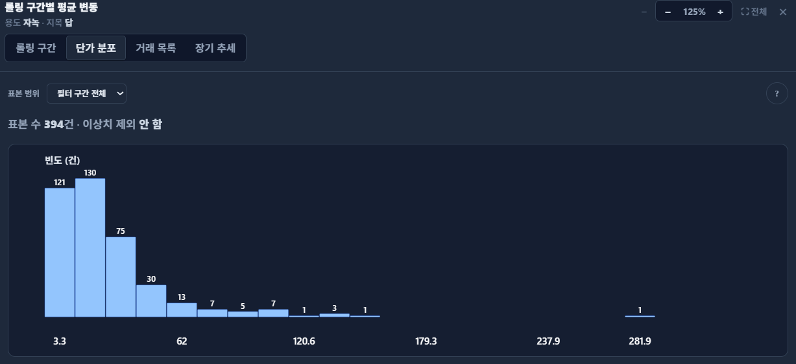

서두 · 학습목표
일부를 조사해서 전체를 알 수 있을까요?
학교 전체 학생의 통학 시간을 알고 싶지만, 모든 학생에게 물어볼 수는 없다고 해 보겠습니다. 일부 학생의 응답으로 전체를 추정하려면 몇 명에게 물어봐야 할까요? 또 어떤 학생들을 골라야 할까요?
조사 인원이 많으면 도움이 되지만, 그것만으로 충분하지는 않습니다. 도서관을 이용하는 학생에게만 물었다면 도서관에 오지 않는 학생의 통학 시간은 제대로 반영되지 않을 수 있습니다. 얼마나 많이 조사했는지와 어떤 과정을 거쳐 조사했는지를 함께 살펴봐야 합니다.
- 알고 싶은 전체인 모집단, 고를 수 있는 목록인 표집틀, 실제로 고른 일부인 표본을 구별합니다.
- 표본을 바꿀 때 생기는 우연한 차이와, 자료를 모으는 방식에서 생기는 편향을 구별합니다.
- 관측과 실험의 차이를 이해하고, 표본에서 얻은 결과를 어느 범위까지 해석할 수 있는지 알아봅니다.
1장에서 배운 관측 단위를 바탕으로 전체와 일부의 관계를 생각해 보겠습니다. 계산 원리는 별도로 만든 가상 거래 100건을 예로 들어 설명합니다.
모집단·표집틀·표본
알고 싶은 전체와 고를 수 있는 목록은 다를 수 있습니다
모집단은 알고 싶은 대상 전체입니다. 학교의 통학 시간을 조사한다면 ‘올해 이 학교에 재학 중인 학생 전체’처럼 대상과 시점을 구체적으로 정합니다. 같은 학교라도 재학생 전체와 졸업생 전체는 다른 모집단입니다.
표집틀은 표본을 고를 때 쓰는 목록이나 접근할 수 있는 대상의 범위입니다. 표본은 그중 실제로 고른 일부입니다. 조사에 응하지 않았거나 필요한 값이 없는 대상이 있다면, 처음 고른 표본과 마지막 분석자료도 달라집니다.
그림 1의 모집단에는 가상 거래 100건이 있습니다. 하지만 조사할 수 있는 목록에는 40건만 있고, 그중 20건을 골랐습니다. 목록에서 빠진 60건은 이 목록 안에서 아무리 공정하게 뽑아도 조사할 수 없습니다. 이런 문제를 포괄 부족이라고 합니다.
물론 목록에 있는 40건만 알고 싶다면 그 40건을 모두 조사하면 됩니다. 문제가 되는 것은 이 결과를 원래 100건 전체의 특성으로 넓혀 말할 때입니다. 먼저 ‘무엇의 전체인가’를 정해야 합니다.
모수와 통계량
평균 계산이 맞아도 전체의 평균과는 다를 수 있습니다
모집단 전체의 평균이나 비율을 모수, 표본에서 계산한 평균이나 비율을 통계량이라고 합니다. 모집단 평균은 보통 μ, 표본평균은 x̄로 씁니다. 지금은 전체에서 구한 값과 일부에서 구한 값의 차이만 기억해도 충분합니다.
예제를 단순하게 만들어 보겠습니다. 모집단 100건 중 A 유형은 80건, B 유형은 20건입니다. A의 단가는 모두 100만원/㎡, B는 모두 200만원/㎡라고 정했습니다. 실제 시장을 재현한 자료가 아니라, 구성비가 평균에 미치는 영향을 보기 위한 가상 자료입니다.
| 자료 | A / B 건수 | 평균 단가(만원/㎡) |
|---|---|---|
| 모집단 | 80 / 20 | (80×100 + 20×200)÷100 = 120 |
| 표집틀 전체 | 20 / 20 | (20×100 + 20×200)÷40 = 150 |
| 그림 1의 표본 | 10 / 10 | (10×100 + 10×200)÷20 = 150 |
모집단에서는 A가 80%인데 조사할 수 있는 목록과 선택한 표본에서는 A와 B가 절반씩입니다. 그래서 모집단 평균은 120이지만 표본평균은 150이 됩니다. 150은 조사한 20건의 평균으로는 맞습니다. 다만 원래 100건 전체의 평균은 아닙니다.
구성비를 맞추면 평균을 바로잡을 수 있을까요?
이 예제에서는 모집단의 비율로 다시 계산하면 0.8×100+0.2×200=120을 얻습니다. 유형 안의 단가를 모두 같게 정했기 때문입니다.
실제 자료에서는 같은 유형 안에서도 조사된 대상과 빠진 대상이 다를 수 있습니다. 모집단의 비율을 알고 유형별 평균도 적절하게 구할 수 있을 때 가중치를 검토하되, 비율을 맞췄다고 모든 편향이 없어지는 것은 아닙니다.
표집 방법
무작위로 뽑는다는 말에는 규칙이 필요합니다
확률표집은 모집단의 각 대상이 선택될 확률을 알 수 있고, 그 확률이 0보다 크도록 설계한 방법입니다. 대상마다 선택확률이 꼭 같아야 하는 것은 아닙니다. 수가 적은 집단을 더 많이 뽑고, 분석할 때 그 차이를 가중치로 반영할 수도 있습니다.
| 방법 | 어떻게 뽑는가 | 주의할 점 |
|---|---|---|
| 단순무작위 | 정해진 크기의 모든 표본이 같은 확률로 뽑히도록 추출 | 대상을 빠짐없이 담은 목록이 필요 |
| 층화 | 지역·유형 등의 층으로 나누고 각 층 안에서 무작위 추출 | 층별 추출 비율이 다르면 가중치를 검토 |
| 군집 | 학교·구역 같은 묶음을 무작위로 고른 뒤 내부를 조사 | 같은 묶음 안의 유사성을 고려 |
| 계통 | 무작위 시작점 뒤 일정 간격으로 선택 | 목록의 주기와 선택 간격이 겹치는지 확인 |
| 편의·자발적 참여 | 접근하기 쉽거나 참여 의사가 있는 대상을 수집 | 누가 빠졌는지, 전체로 일반화할 수 있는지 확인 |
층화는 지역이나 유형별로 나눈 각 층에서 표본을 뽑는 방법입니다. 군집표집은 구역 같은 묶음 중 일부를 먼저 고르는 방법입니다. 둘 다 묶음을 쓰지만, 모든 층에서 뽑는지 일부 묶음을 고르는지가 다릅니다. 같은 묶음 안의 대상들이 비슷하면 그 관계도 통계 계산에 반영해야 합니다.
‘아무거나 100건 골랐다’는 말은 무작위 추출과 다릅니다. 예를 들어 가입일 내림차순 회원 목록의 첫 100명을 고르면 최근 가입한 회원만 모입니다. 어떤 목록에서 어떤 규칙으로 뽑았는지를 함께 기록해야 결과를 해석할 수 있습니다.
표집 변동과 편향
더 많이 모으면 흔들림은 줄어도 치우침은 남을 수 있습니다
같은 모집단에서 같은 방법으로 표본을 뽑아도 매번 뽑히는 대상은 달라집니다. 그에 따라 표본평균이 달라지는 것이 표집 변동입니다. 한 번 구한 평균이 모집단 평균과 다르다고 곧바로 수집 방식이 잘못됐다고 할 수는 없습니다.
편향은 같은 절차를 반복했을 때 추정값이 목표값에서 한쪽으로 치우치는 성질입니다. 표본을 늘리면 우연한 흔들림은 줄어들 수 있지만, 특정 유형이 목록에서 빠지는 문제까지 해결되지는 않습니다.
그림 3의 위쪽 두 줄은 전체 100건에서 뽑은 결과입니다. 표본평균이 모집단 평균 120 주변에 모이며, 5건보다 20건을 뽑았을 때 더 좁게 모입니다.
아래쪽 두 줄은 목록 40건 안에서만 뽑은 결과입니다. 여기서는 평균이 약 150 주변에 모입니다. 표본을 늘려도 120으로 가까워지는 것이 아니라, 다른 범위의 평균인 150을 더 정밀하게 구하게 됩니다.
목록 40건을 전부 조사하면 그 목록의 평균은 정확히 150입니다. 목록 안에서 무엇을 뽑느냐에 따른 변동은 없어지지만, 원래 모집단 평균 120과의 차이는 남습니다. ‘전부 수집했다’는 말을 들으면 어느 범위의 전부인지 확인해야 하는 이유입니다.
반복표집은 어떻게 계산했나요?
각 회에서 5건 또는 20건을 중복 없이 무작위로 뽑았습니다. 다음 회에는 원래 목록으로 돌아가 다시 뽑았습니다. 네 조건을 각각 500회 반복했으며 난수 시드는 20261007입니다. 반복 횟수가 유한하므로 반복 평균이 정확히 120 또는 150이 되는 것은 아닙니다.
가상 원자료와 반복표집 결과(JSON)에서 값을 확인할 수 있습니다. 모집단은 A 80건·B 20건이고 목록은 A 20건·B 20건입니다. 실제 시장의 추정 정확도를 보여 주는 결과는 아닙니다.
자료 수집의 함정
빠진 대상과 잘못 기록된 값은 별도로 살펴봅니다
건수만 세어서는 자료 수집 과정의 문제를 알기 어렵습니다. 어떤 대상이 빠졌는지, 같은 항목을 같은 기준으로 기록했는지도 살펴봐야 합니다.
- 목록에서 빠진 대상: 온라인 설문만 한다면 인터넷을 잘 이용하지 않는 사람은 포함되기 어려울 수 있습니다. 결과로 전체 주민의 의견을 설명할 수 있는지는 따로 검토해야 합니다.
- 무응답: 조사에 답한 사람과 답하지 않은 사람의 특성이 다르면 응답자만의 결과는 전체와 다를 수 있습니다.
- 측정·기록 오류: 몸무게를 잴 때 측정 도구나 옷차림이 다르면 기록에 차이가 생길 수 있습니다. 서로 다른 기준으로 측정한 값을 같은 기준인 것처럼 비교하지 않도록 확인해야 합니다.
대상을 전부 조사한 경우에도 기록 오류는 생길 수 있습니다. 전체를 수집했는지와 정확히 기록했는지는 별개의 질문입니다.
관측과 실험
무작위로 고르는 것과 무작위로 배정하는 것은 다릅니다
모집단을 대표하는지와 원인을 비교할 수 있는지도 다른 문제입니다. 무작위 추출은 누구를 조사할지 정하는 방법이고, 무작위 배정은 조사에 참여한 대상을 어떤 실험 조건에 둘지 정하는 방법입니다.
연구자가 조건을 배정하지 않고 기존 상태와 결과를 기록하는 것은 관측연구입니다. 예를 들어 도서관 이용이 잦은 학생의 성적이 높더라도 학습 시간이나 학습 의욕이 함께 다를 수 있습니다. 이런 요인이 도서관 이용과 성적 모두에 관련되면 성적 차이만으로 도서관 이용의 효과를 분리하기 어렵습니다. 이를 교란이라고 합니다.
실험에서는 연구자가 조건을 배정한 뒤 결과를 비교합니다. 참여 학생을 두 학습법에 무작위로 배정한 뒤 같은 시험의 결과를 비교하는 경우를 생각해 보세요. 무작위 배정은 학습법 외의 조건을 평균적으로 균형 있게 만들어 원인 비교를 돕습니다. 다만 작은 실험에서의 우연한 불균형, 중도 이탈, 학생끼리 영향을 주고받는 문제는 남을 수 있습니다.
이 학생들이 자발적으로 참여했다면 실험 결과가 전체 학생에게도 같다고 바로 말할 수는 없습니다. 참여 대상 안에서의 비교와 전체로의 일반화는 구별해야 합니다. 관측자료로 원인을 분석할 때도 그에 맞는 연구 설계와 가정이 필요하며, 회귀식에 변수를 넣는 것만으로 인과관계가 증명되지는 않습니다.
확인 문제
결과를 어디까지 설명할 수 있는지 판단해 보세요
- 그림 1의 목록 40건을 전부 조사했습니다. 원래 100건의 평균도 정확히 알게 된 것일까요?
답과 해설
아니요. 목록 40건의 평균 150을 구한 것입니다. 빠진 A 60건까지 포함한 모집단의 평균은 120입니다. 전부 조사했다는 말에도 대상 범위가 필요합니다.
- 1학년의 통학 시간을 알아보려고 1학년만 조사했습니다. 이것만으로 선택편향이라고 할 수 있을까요?
답과 해설
1학년을 설명하려는 목적이라면 대상 범위를 정한 것입니다. 이 결과를 다른 학년까지 포함한 전교생으로 넓혀 말하려 할 때 범위가 맞지 않는 문제가 생깁니다.
- 자발적으로 참여한 학생을 두 학습법에 무작위 배정했습니다. 효과가 전체 학생에게도 같다고 말할 수 있을까요?
답과 해설
무작위 배정은 참여 학생 안에서 학습법의 효과를 비교하는 데 도움이 됩니다. 참여 학생 자체가 전체의 무작위 표본은 아니므로, 다른 학생으로 결과를 넓혀 말하려면 참여 대상의 특성과 효과가 어떻게 다른지 추가로 살펴봐야 합니다.
CH2 Macro에서 읽기
‘필터 구간 전체’가 시장 전체를 뜻하지는 않습니다
아래는 CH2 Macro 토지 통계의 ‘롤링 구간별 평균 변동’ 창에서 단가 분포 탭을 연 화면입니다. 용도 ‘자녹’, 지목 ‘답’이 선택되어 있고 표본 범위는 ‘필터 구간 전체’, 표본 수는 394건입니다. 이상치는 제외하지 않은 상태입니다.

이 화면을 읽을 때는 그래프 모양보다 먼저 자료의 범위를 확인해 보세요.
- 무엇이 포함됐나요? 선택한 지역·기간·용도·지목과 표본 범위를 확인합니다. 이 캡처에는 지역과 조회 기간이 모두 드러나 있지 않으므로 원래 조회 화면에서 함께 확인해야 합니다.
- 394건은 무엇의 수인가요? 선택 조건에 포함된 거래 수입니다. 그 지역에 존재하는 토지의 수가 아니며, 거래되지 않은 토지까지 포함한 것도 아닙니다. ‘필터 구간 전체’도 현재 필터 범위 안의 전체라는 뜻입니다.
- 어떻게 모인 자료인가요? 공개 실거래 자료에 수록되어 서비스의 수록·정제·필터 조건에 포함된 거래입니다. 화면에 ‘표본’이라고 표시되어도, 모든 토지에서 선택확률을 정해 무작위로 뽑은 조사 표본이라고 볼 수는 없습니다.
- 어디까지 말할 수 있나요? ‘선택한 조건의 거래 단가가 어떻게 분포하는가’를 보여 줍니다. 이 분포만으로 거래되지 않은 토지나 다른 용도의 토지도 같다고 말할 수는 없습니다. 표본 수만으로 대표성이나 추정 오차가 보장되지도 않습니다.
가로축은 단가 구간, 세로축은 그 구간에 들어간 거래의 빈도입니다. 단가의 단위는 화면의 도움말과 거래 목록에서 확인하세요. 그래프 모양을 읽는 방법은 다음 장에서 다룹니다.
기간을 넓혀 건수가 늘어나면 더 많은 거래를 볼 수 있지만 서로 다른 시기의 시장이 섞입니다. 용도나 지목을 바꿀 때도 비교 대상이 달라집니다. 표본 수와 함께 선택 조건을 기록해야 결과가 달라진 이유를 살펴볼 수 있습니다.
결론 · 학습 요약
많이 모았는지와 제대로 대표하는지는 다른 질문입니다
이번 장에서는 자료의 건수보다 먼저 대상과 수집 과정을 확인해야 하는 이유를 살펴봤습니다. 다음 네 가지를 기억해 두세요.
- 대상과 목록을 구별합니다. 모집단은 알고 싶은 전체, 표집틀은 고를 수 있는 목록, 표본은 실제로 고른 일부입니다.
- 평균의 차이를 구별합니다. 우연한 표집 변동과 수집 방식의 편향은 다릅니다. 표본을 늘려도 목록 밖으로 빠진 대상의 문제는 남을 수 있습니다.
- 해석할 범위를 맞춥니다. 조사 대상을 좁히는 것 자체가 잘못은 아닙니다. 조사한 대상의 결과를 어떤 전체로 넓혀 말하려는지 확인해야 합니다.
- 추출과 배정을 구별합니다. 누구를 조사할지 고르는 과정과 실험 조건을 나누는 과정은 역할이 다릅니다. 대표성과 원인 비교를 따로 살펴봅니다.
이제 자료를 그림으로 나타내 보겠습니다. 03장 ‘그래프로 보는 데이터와 분포’에서는 표를 히스토그램과 산점도 등으로 바꾸어 자료의 모양을 읽습니다. 그때도 ‘어떤 대상의 그림인가’를 먼저 확인하세요.
참고자료
- OpenStax, Introductory Statistics 2e §1.1 — 모집단·표본·모수·통계량.
- 같은 교재 §1.2 — 표집 방법과 자료 수집의 변동.
- 같은 교재 §1.4 — 관측과 실험, 무작위 배정.
참고자료의 기존 확인일: 2026-10-07. 본문의 도식과 가상 예제는 이 과정을 위해 작성했습니다. 가상 자료와 반복표집 결과는 고정된 난수 시드 20261007로 생성했습니다.